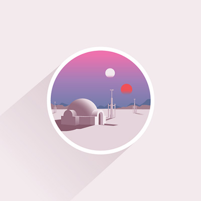

-

-

- 
-

-

-

默认1：横向滚动，显示2张，滚动1张，间隙50,回调函数
默认2：垂直滚动，显示2张，滚动1张，间隙10
默认3：滚动方式
linear swing jswing
easeInQuad easeOutQuad easeInOutQuad
easeInCubic easeOutCubic easeInOutCubic
easeInQuart easeOutQuart easeInOutQuart
easeInQuint easeOutQuint easeInOutQuint
easeInSine easeOutSine easeInOutSine
easeInExpo easeOutExpo easeInOutExpo
easeInCirc easeOutCirc easeInOutCirc
easeInElastic easeOutElastic easeInOutElastic
easeInBack easeOutBack easeInOutBack
easeInBounce easeOutBounce easeInOutBounce